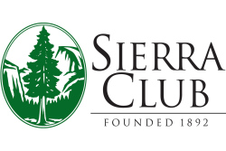
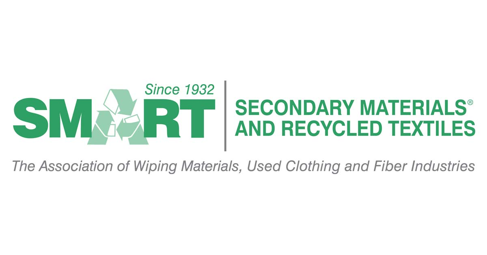

35.4 billion pounds of textile waste is expected this year. Help decrease this estimate and donate!
BE PART OF THE CHANGE! That shirt in your closet can be part of this change. Just make sure to not throw anything away! Donations are always accepted just click on the image and be proud to help!


Helpsy has collected 25 million pounds of clothes last year. They have many bins around the country where people can easily donate unwanted clothes. They accept everything from that polka dot shirt in your closet to unpaired sock in your drawer!

Donate money here at Sierra Club. You can help the environment and be part of a movement that will make great changes.
Secondary Materials takes donated clothes and sepearates them. The clothes that are no longer wearable are used for cloths or carpet underlayment.They make it easy for everyone to donate and are doing everything in their power to make a good impact on the environment.